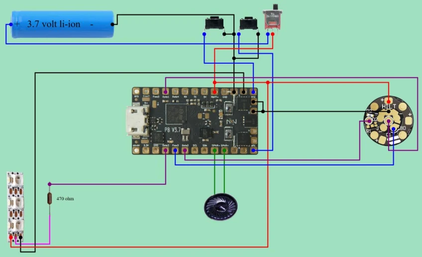
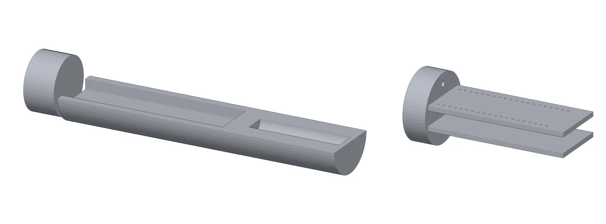
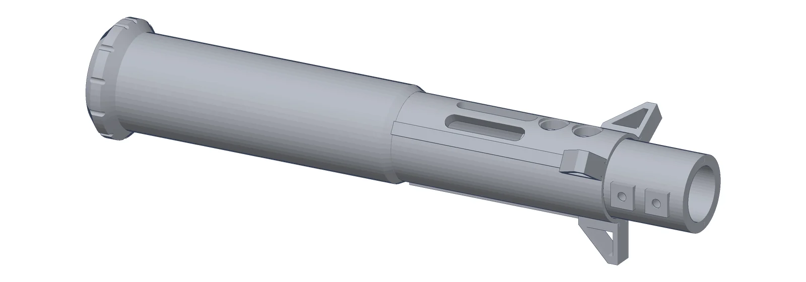
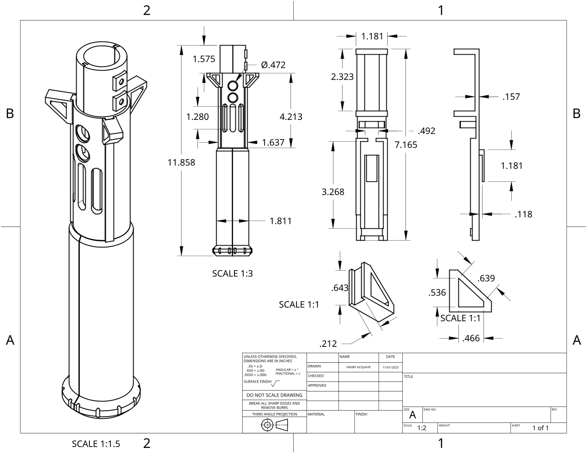
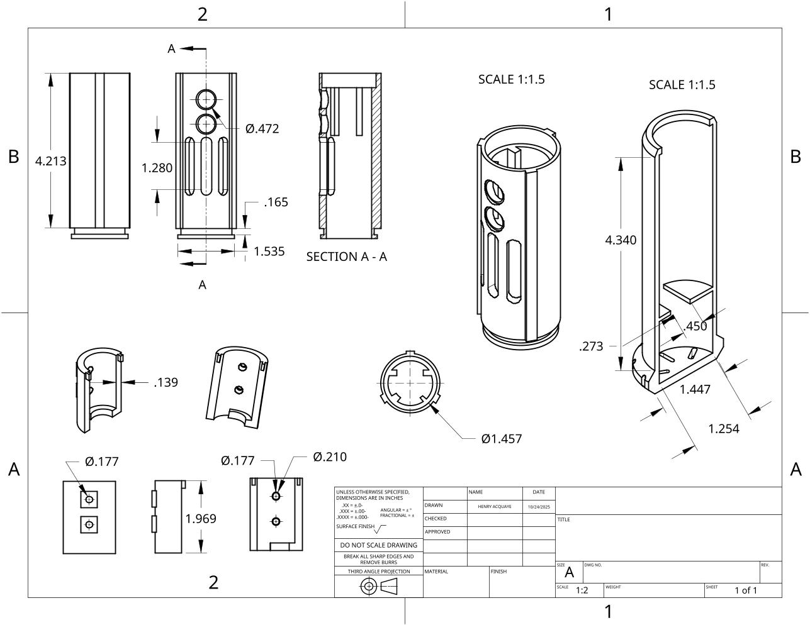
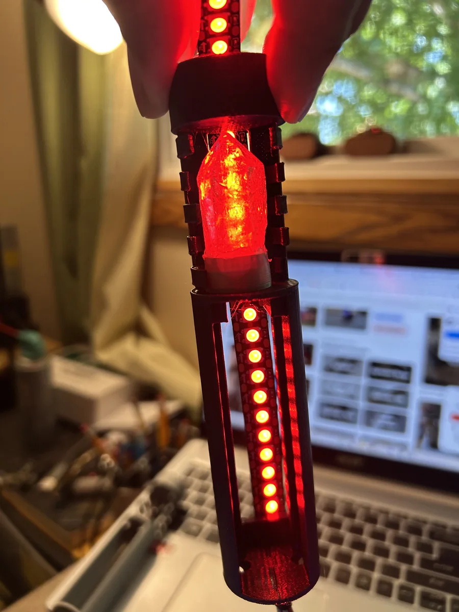
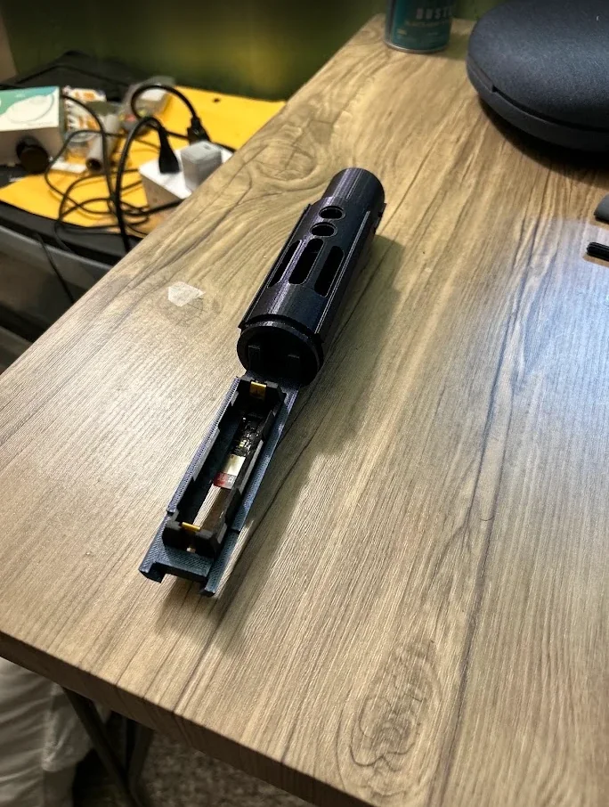
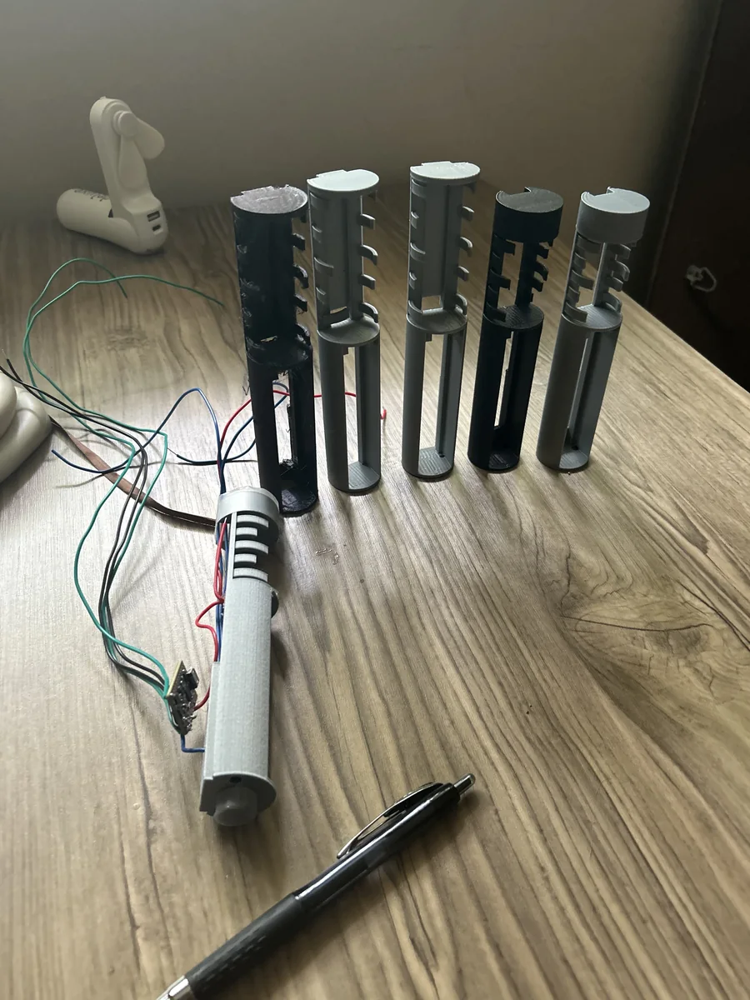

01The electronics sled
Everything electronic in a lightsaber has to fit inside a hollow hilt about 3 cm across: the control board, a battery, a speaker, wiring, and in my design an illuminated crystal you can see through the handle. The sled is the printed frame that holds all of it in place and slides into the hilt.
It has to be stiff enough to survive being swung hard, leave room to route wires cleanly, and still let me get to the board to update its software.
02Electronics & prototyping
Before designing a sled, I proved out the electronics on a breadboard. The first prototype ran on a Raspberry Pi Pico driving an LED strip and a speaker. The second moved to a Proffie board, which is made for lightsabers and has the motion sensor built in.
Final wiring
A Proffie board v3.7 runs everything from a 3.7 V lithium-ion cell through a slide switch. Two buttons control it, a speaker connects to the speaker outputs, and the data lines drive the blade connector board and a short LED strip, with a 470 Ω resistor on the strip's data line.

0311 versions
Version 1 was adapted from designs I found online, so it isn't shown here. Versions 2 through 11 are my own. Pick a version to see it and what changed. You can drag to rotate the model and scroll to zoom.

V2 Drag to rotate · scroll to zoom04Growing, then shrinking
The sled's length tells the story of the project. It nearly doubled in V9, when I moved the board, added a power switch and mounted the buttons on the sled. Then V10 and V11 cut it back down as I moved the buttons to the outer casing and removed every bit of material I didn't need.
Overall length of each printed sled, measured from the CAD models. V2 was two separate pieces, 15.5 cm and 7 cm long.
05Final assembly
In the final design, the sled slides into an outer casing split into upper and lower halves. The buttons mount to the upper casing, and cutouts below them let you see the illuminated crystal.






06Blade tests
07Takeaways
- Design for service. V6 and V7 came from one need: updating the board's software without taking the saber apart. A simple cable cutout beat a removable second piece.
- Stiffness before features. V4 was stripped so far down that it had no attachment points and couldn't survive being swung, so I never printed it. V5 kept its simple layout and added back the structure it needed.
- Think about the whole system. Moving the buttons from the sled to the outer casing in V10 saved length and weight on the sled.
- Iterate, then trim. Once the layout stopped changing, V11 was purely about removing material.